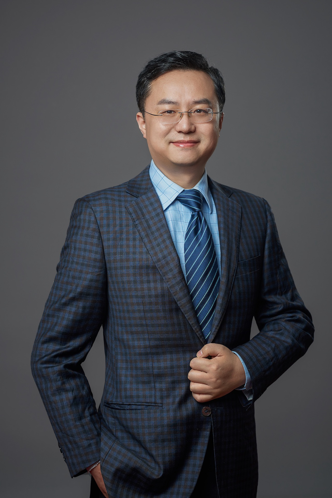

葛晓虎
|  |
|
欢迎电子信息工程、通信工程、统计物理等方向的本科生和硕士生加入实验室！ |
个人简介
华中科技大学电子信息与通信学院副院长，国家绿色通信与网络联合研究中心主任，二级教授，博士生导师，国家高层次人才特殊支持计划科技创新领军人才，中国科协海智计划特聘专家，爱思唯尔高被引学者，华中卓越学者特聘教授，澳大利亚悉尼科技大学兼职教授，华中科技大学—悉尼科技大学移动通信联合研究中心主任。 2003年毕业于华中科技大学获信息与通信工程博士学位， 2005年获意大利伽利略奖(Galilei Grant)。近年来主持承担了20余项国家级科研课题和多项国际高水平科技合作项目，合计发表200余篇SCI学术论文，Google 学术引用逾9300次，多篇代表性论文被评为IEEE通信学会领域最佳论文，研究成果荣获2016年度湖北省自然科学二等奖。目前担任国际信息处理联合会（IFIP）理事会中国代表和联合国咨商信息与通信技术专委会委员， 国家科技部和国家自然基金委会评专家，湖北省科技厅评审专家，IET Fellow，中国通信学会会士，也是IEEE Wireless Communications，IEEE Transactions on Vehicular Technology等10余份国际顶级期刊编委， 并担任IEEE ICC、IEEE globecom等30多个国际会议的Symposium chair，TPC成员和审稿人。
荣誉
国家高层次人才特殊支持计划科技创新领军人才
中国科协海智计划特聘专家
国际信息处理联合会（IFIP）理事会中国代表， 2021年至今
2022年IET技术创新银奖
IEEE杰出讲师，2019-2020
中国通信学会会士，2019年至今
IET FELLOW，2016年至今
主持研究项目
在研：
国家自然科学基金重点国际合作项目：面向移动通信与计算融通的信息与能量耦合机理研究，项目编号：6211001027，研究周期：2022～2026。
国家自然科学基金重点项目：基于多址边缘计算的智能网络认知理论研究，项目编号：U2001210，研究周期：2021～2024。
国家重点研发计划子课题：6G资源配置与高能效通信技术研究，项目编号：2020YFB1806605，研究周期：2020～2023。
华为项目：新能源与无线网络联合建模及网络规划关键技术研究，研究周期：2022-2023年。
华为项目：面向家庭和园区场景的确定性WIFI研究，研究周期：2022-2023年。
华为GIFT项目：WIFI IRS智能反射面关键技术研究”，研究周期：2020～2022年。
结题：
国家重点研发计划项目：面向自动驾驶的5G车联网关键技术，项目编号：2017YFE012600，研究周期：2019～2020年。
国家自然科学基金重点国际合作项目：绿色通信网络信息空间协作优化理论与关键技术研究，项目编号：61210002，研究周期：2013～2017。
湖北省科技厅国际合作项目：下一代绿色宽带移动通信关键技术联合研究，项目编号：2011BFA004，研究周期：2011～2013年。
国家自然科学基金面上项目：无线网络帧流量建模及性能分析，项目编号：60872007，研究周期：2009～2011。
国家自然科学基金国际交流项目：无线网络流量特性研究”，项目编号：60610106111，研究时间：2007年。
科技部国际合作研究项目：无线网络合作通信技术研究，项目编号：0903，研究周期：2010～2012年。
国家高技术863计划：基于MIMO环境的多小区多用户干扰协调关键技术研究，批准号：2009AA01Z239，研究周期：2009～2010年。
欧盟地平线2020计划项目：EU-China Study on IoT and 5G，项目编号：723227，研究周期：2016/7/01～2018/06/30。
芬兰TEKES国际合作项目：Energy-Efficient Wireless Networks and Connectivity of Device - Densification，项目编号：DNRO:195/31/2013，研究周期：2013～2015。
英国EPSRC国际合作项目：UK-China Science Bridges: R&D on 4G Wireless Mobile Communications， 项目编号：EP/G0427／1，研究周期：2009年4月～2012年5月。
欧盟第7框架计划项目：Security, services, networking and performance of next generation IP-based multimedia wireless networks， 项目编号：PIRSES-GA-2009-247083，研究周期：2010/06/14～2014/06/15。
欧盟第7框架计划项目：Towards Pervasive Indoor Wireless Networks, 项目编号：PIRSES-GA-2012-318992，研究周期：2012/10/01～2016/09/30。
欧盟第7框架计划项目：Cross-layer Research on Green Cooperative Cognitive Radio Networks and Services, 项目编号：PIRSES-GA-2013-610524，研究周期：2014/4／1～2018/3／30。
意大利外交部国际合作项目：Coordination techniques for multi-cell cooperative MIMO networks, 项目编号：PGR00195，研究周期：2013～2015年。
欧盟国际合作项目Erasmus Mundus External Cooperation Window (EMECW) program： Connecting Europe and China through Interuniversity Exchange (CONNEC)”，研究周期：2009～2012年。
学术服务
编委 :
IEEE Wireless Communications
IEEE Transactions on Vehicle Technology
IEEE Transactions on Green Communications and Networking
IEEE Access Journal
IEEE China Communications
International of Communication Systems
KSII Transactions on Internet and Information Systems
International of Internet Technology（SCI期刊）
IET Networks
IET Wireless Sensor Systems
Wireless Communications and Mobile Computing Journal
学术获奖

|

|
2022年IET技术创新银奖 |
2016年EUROPEAN WIRELESS 会议最佳论文 |

|

|
2015年IWCMC最佳论文 |
2014年GLOBECOM最佳论文 |

|

|
2010年GLOBECOM最佳论文 |
IEEE COMSOC 最佳刊物 |